执行器#
关节系统通过受驱动的关节运动。实际关节可以使用电机、液压马达等主动部件，也可以使用弹簧和摩擦等被动部件。这些部件会带来有限的输出力矩、速度限制、延迟和齿轮传动效应。
Isaac Lab 提供两种方式，在仿真中复现这些行为：
隐式执行器 将位置和速度增益传给物理引擎，由其求解器运行弹簧阻尼（PD）控制器。当内置 PD 模型已能满足需求时，这种方式开销较低。在不受其他因素影响时，PhysX 隐式驱动可能允许更高的增益或更大的时间步长。但接触、耦合关节、关节限位、大幅目标变化或求解器收敛不足，仍可能使其不稳定。参见 PhysX 关节体驱动稳定性指南 。
显式执行器 运行模型，计算关节驱动力，将其限制在电机能力范围内，再提交结果。它可以模拟饱和、延迟、传动比和学习得到的电机行为。原生执行路径处理指令的方式不同：Newton 在求解器中处理，而 PhysX 和 OVPhysX 在
write_data_to_sim()期间通过共享的主机端适配器处理。
执行器组通过 actuators 配置，运行时由 actuators 上的 ActuatorCollection 提供访问。该集合负责分发执行器组，并暂存指令和监测数据，由关节体执行并提交。LEAPP 动作项仍使用关节体的设置方法；参见 从已弃用的设置方法迁移 。
快速使用#
在关节体配置中声明一个或多个执行器组。每组通过正则表达式选择一组互不重叠的关节，并指定模型：
from isaaclab.actuators import ImplicitActuatorCfg
from isaaclab.assets import ArticulationCfg
robot_cfg = ArticulationCfg(
spawn=..., # your USD / spawner config
actuators={
"legs": ImplicitActuatorCfg(
joint_names_expr=[".*_hip_.*", ".*_knee_.*"],
stiffness=40.0,
damping=2.0,
joint_effort_limit=80.0,
),
},
)
运行时通过 target_command 发送指令。位置和速度指令使用关节侧坐标，所有指令缓冲区都按关节体中的关节索引排列。设置方法只接受关键字参数，默认作用于全部环境和全部关节：
import torch
# desired position for every joint of every environment
values = torch.full((robot.num_instances, robot.num_joints), 0.5, device=robot.device)
robot.actuators.target_command.set_position_index(value=values)
关节体在 write_data_to_sim() 中暂存并提交执行器指令。Isaac Lab 管理的模型和共享主机端适配器在此调用期间运行；Newton 原生控制器在求解器内完成处理。以下章节介绍这一流程、可用模型及其参数。
执行器处理流程#
设置执行器指令不会直接写入求解器。指令先进入集合，然后各组选择以下三种执行路径之一：
指令视图 —
actuators.target_command.set_*_index和_mask将期望位置、速度和驱动力写入按关节索引排列的缓冲区。ActuatorCollection — 分发执行器组，并暂存整个关节体的指令、处理后的关节指令和监测数据。执行器模型自行维护增益和临时状态。
执行路径 — Isaac Lab 显式模型计算并限幅驱动力；隐式驱动使用求解器侧的 PD 增益应用目标；原生执行器则通过 Newton 或共享主机端适配器运行。
对于 Isaac Lab 管理的模型， actuators.output_command 包含提交给后端的、处理后的位置、速度和驱动力。原生路径绕过此视图，因此它不能反映原生路径实际提交的指令。PhysX 和 OVPhysX 在 write_data_to_sim() 期间处理指令，Newton 原生控制器则在求解器内处理。受支持的原生模型及限制见 原生执行器 。

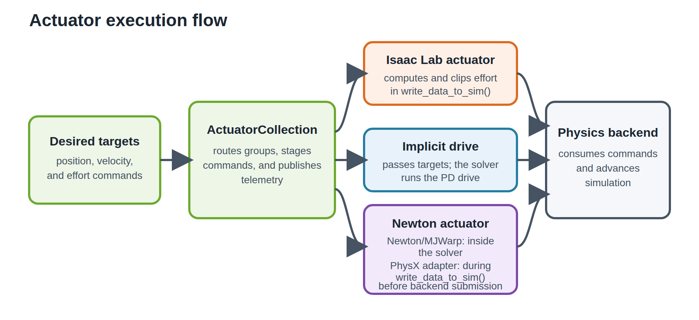

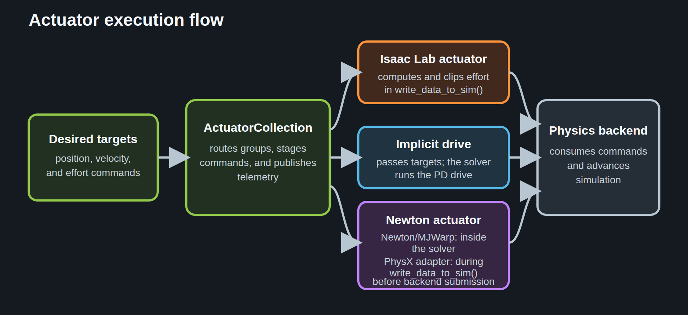
隐式组和显式组以不同方式存储增益：
对于 隐式 组，
stiffness和damping写入求解器，由求解器执行 PD 控制律。compute()原样传递期望目标，同时记录近似力矩作为监测数据。对于 显式 组，模型使用相同的增益计算力矩，而求解器中这些关节自身的 PD 增益设为零。因此，在显式关节上读取
data.joint_stiffness或data.joint_damping会返回 零 — 增益存储在执行器模型中，而不在求解器中。
执行器组配置的增益与 joint_stiffness 和 joint_damping 分开维护。这两个数据字段报告求解器驱动增益：初始化后，它们与隐式增益一致；对于显式执行器关节则为零。它们不会同步反映执行器模型的增益。
关节和执行器属性的归属#
执行器配置选择关节，并可在构造时覆盖其属性。Isaac Lab 构建关节体时会解析 joint_effort_limit 、 joint_velocity_limit 、电枢惯量、摩擦和隐式驱动增益。 ArticulationData 保存实时值，包括 joint_effort_limits 、 joint_vel_limits 、 joint_armature 和受支持的摩擦属性。请通过关节体数据和关节写入方法读取或修改它们。 ActuatorCollection 不提供关节属性 API。
运行时的执行器组属性 effort_limit_sim 、 velocity_limit_sim 、 armature 、 friction 、 dynamic_friction 和 viscous_friction 已移除。请从关节体数据读取实时值，并使用对应的关节写入方法。已弃用的配置别名 effort_limit_sim 和 velocity_limit_sim 在 3.x 期间仍可使用。替代的数据视图和写入方法见 执行器驱动力与关节限值名称 。
显式执行器保存模型状态，例如 actuator_effort_limit 、额定 actuator_velocity_limit 、增益、延迟和电机曲线，不再单独存储求解器限制或摩擦值。隐式执行器的驱动由后端运行，因此它们从关节体的实时属性读取刚度、阻尼和驱动力投影；直接为这些属性赋值会被忽略并发出警告，请改用关节体的关节写入方法或 randomize_actuator_gains 事件。
由 Newton 执行的组完全没有 Isaac Lab 模型：集合中的映射条目就是所属的 Newton Actuator 对象，其控制器将自身参数与求解器增益分开维护。如需直接访问，可读取或修改其组件（ controller 、 delay 、 clamping ）；也可使用 read_group_parameter() 和 write_group_parameter() ，按公共关节顺序访问指定组，并选择环境。
actuator_effort_limit 和 actuator_velocity_limit 作用于执行器模型； joint_effort_limit 和 joint_velocity_limit 作用于关节或求解器，两者可以取不同值。显式模型将输出限制在 actuator_effort_limit 内， joint_effort_limit 则限制求解器。 actuator_velocity_limit 是模型的关节侧额定速度，对于隐式执行器则是软速度限制的快照。 joint_velocity_limit 请求求解器约束。各后端的实现不同，因此求解器速度限制不能作为通用的速度限幅机制。 effort_limit 和 velocity_limit 是已弃用的配置及运行时组别名，分别解析为 actuator_effort_limit 和 actuator_velocity_limit 。隐式组可以分别配置 actuator_effort_limit 和 joint_effort_limit ，区分模型额定上限与求解器限幅；未设置时，前者跟随实时求解器限制。
选择模型#
所有模型均使用 ActuatorBaseCfg 。各 PD 模型的区别在于限幅方式和状态。神经网络模型用学习得到的力矩预测器替代解析 PD 控制律。请选择能够满足需求的最简单模型。
模型（配置） |
力矩 / 限幅 |
限幅发生的位置 |
额外配置字段 |
|---|---|---|---|
求解器使用写入的增益执行 PD 控制律。 |
|
-- |
|
\(\tau = k_p (q_{des}-q) + k_d(\dot{q}_{des}-\dot{q}) + \tau_{ff}\) |
模型直接限幅至 \(\pm\,\tau_{max}\) （ |
-- |
|
相同的 PD 力矩，限幅到四象限力矩-速度包络内。 |
模型根据随速度变化的上限进行限幅。 |
|
|
对循环缓冲区延迟后的指令应用理想 PD。 |
与理想 PD 相同（ |
|
|
延迟 PD，力矩上限随角度变化。 |
通过关节角度查找表限制力矩。 |
|
|
训练好的网络根据关节历史预测力矩。 |
网络输出根据直流电机包络限幅。 |
|
ImplicitActuator。 默认模型。由求解器应用增益和限制。后端未提供驱动力监测值时，Isaac Lab 根据当前状态进行估计。
IdealPDActuator。 带前馈驱动力的显式 PD 控制器，模型侧的对称力矩上限为 \(\pm\,\tau_{max}\) 。
DCMotor。 添加线性的四象限力矩-速度曲线。 saturation_effort 是堵转力矩， actuator_velocity_limit 是空载速度。两者都接受以关节名称模式为键的字典，因此不同减速比后的关节可以共享一个组，同时拥有各自的曲线，例如四足机器人中膝关节比髋关节多一级减速的情况。
DelayedPDActuator。 对位置、速度和驱动力指令加入延迟的理想 PD 控制器。重置时从 [min_delay, max_delay] 均匀采样延迟。
RemotizedPDActuator。 带角度相关力矩限制的延迟 PD 控制器。 joint_parameter_lookup 表存储关节角度、传动比和最大力矩，适用于有效力臂随运动范围变化的连杆机构。
ActuatorNetMLP / ActuatorNetLSTM。 学习得到的力矩模型，使用关节位置误差和速度历史，并通过直流电机包络限制输出。它们需要 TorchScript 检查点。配置详情见 isaaclab.actuators API 参考。
参数参考#
各小节在改变一个参数的同时，对比五个执行器。所有片段均使用单关节摆，时间步长为 \(dt = 1/360\text{ s}\) ，以 60 Hz 发送指令。刚度、阻尼和电枢惯量的参数扫描使用 隐式 路径。
重要
显式组仍保留求解器驱动力限制。 对于显式组，求解器保留已设置的 joint_effort_limit ，因此显式模型提交的驱动力会被求解器再次限幅。如果只希望由模型限幅，请将 joint_effort_limit 设为不小于 actuator_effort_limit 的值。模型限制、关节限制和隐式别名的语义见 关节和执行器属性的归属 。
刚度#
刚度（ \(k_p\) ，比例增益）控制关节向位置目标运动的力度。较高刚度可改善跟踪，但可能增加超调和振荡。刚度过小则会在负载下产生稳态误差。应结合阻尼一起调节刚度。旋转关节的单位为 [N·m/rad]，移动关节为 [N/m]。


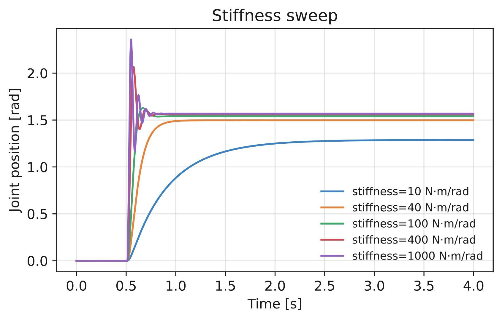

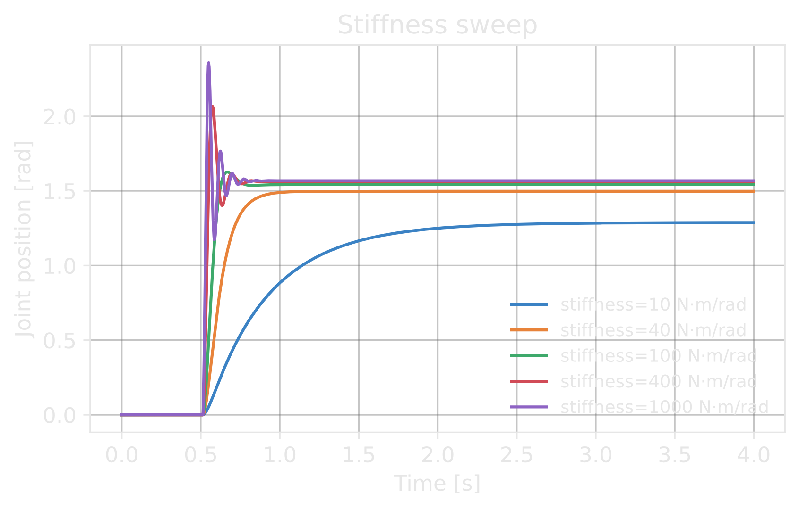
阻尼#
阻尼（ \(k_d\) ，微分增益）抵抗关节速度。阻尼过小会使高刚度关节振荡。增大阻尼可减小超调，直到达到临界阻尼；再继续增大，响应会变得迟缓。阻尼也决定速度目标的跟踪增益。旋转关节的单位为 [N·m·s/rad]，移动关节为 [N·s/m]。


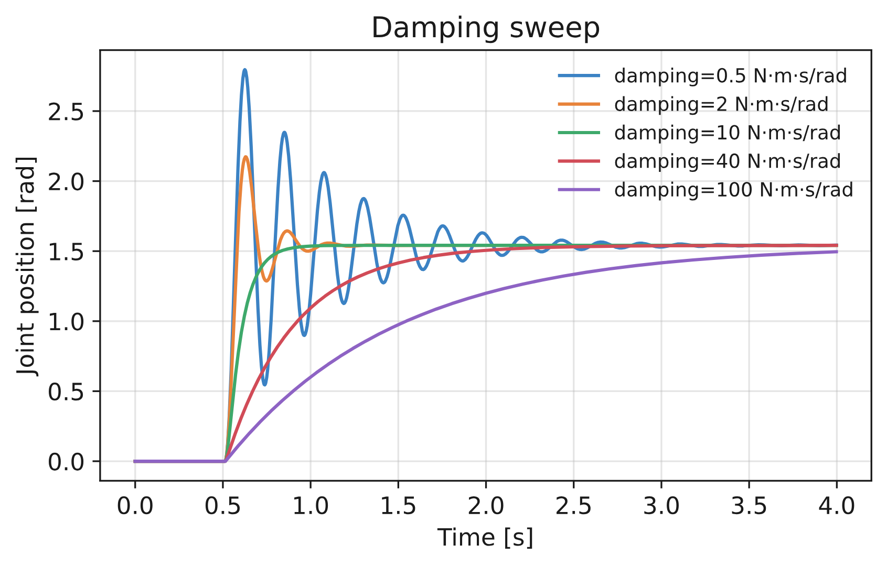

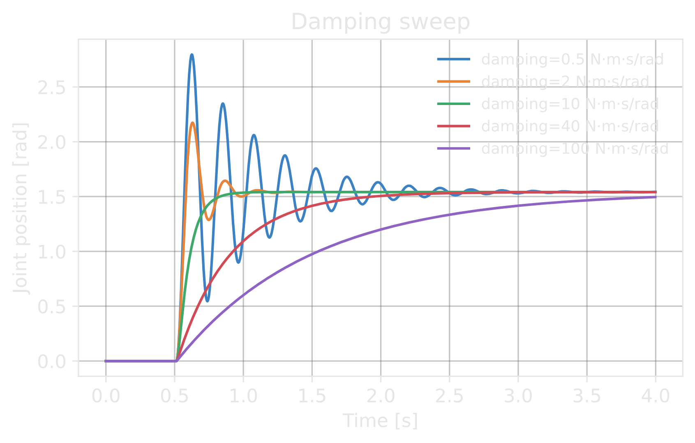
电枢惯量#
电枢惯量 [kg 或 kg·m²，取决于关节类型] 表示折算到关节侧的电机和齿轮箱惯量。它被加到关节空间惯量上，因此会改变物理模型。在此单关节对比中，增大电枢惯量会减慢响应，并提高所选增益下的稳定裕度。对于低惯量关节，它还可以改善数值条件。
显式和隐式执行器可能需要不同的稳定性设置，因为显式模型提交驱动力，而隐式模型使用求解器驱动。如果显式仿真发散，请检查质量和惯量、目标缩放及更新频率、驱动力限制、增益、时间步长和求解器收敛情况。电枢惯量应根据电机和传动模型确定。更多信息见 OmniPhysics 关节体稳定性指南 。


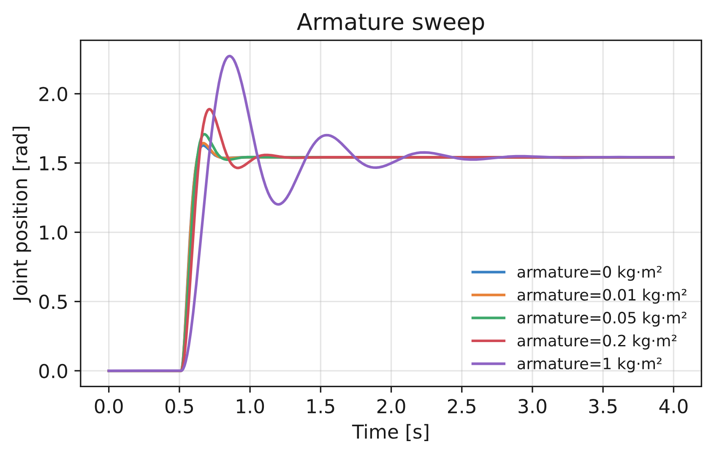

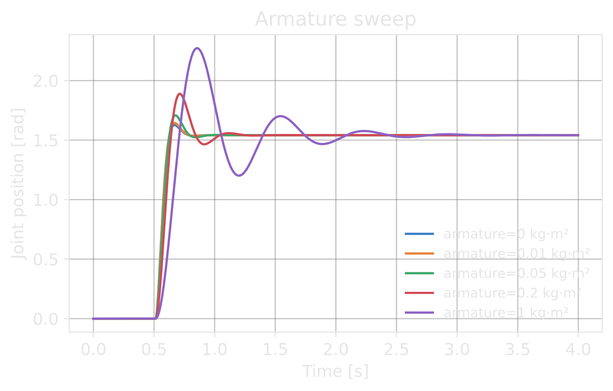
摩擦#
关节摩擦独立于 PD 指令起作用。对自由旋转的关节，更大的摩擦会使速度更快衰减。Isaac Lab 支持静摩擦（ friction ）、动摩擦（ dynamic_friction ）和黏性摩擦（ viscous_friction ）。应使用它来模拟齿轮箱的静摩擦和拖曳阻力，而不是稳定控制器。
备注
摩擦约定取决于后端。PhysX 在 Isaac Sim 4.5 中使用无量纲的静摩擦和动摩擦系数，在 5.0 及之后的版本中使用驱动力数值 [N 或 N·m，取决于关节类型]。OVPhysX 使用无量纲的静摩擦和动摩擦系数。Newton 使用干摩擦驱动力，没有独立的动摩擦值。三者均使用黏性阻尼 [N·s/m 或 N·m·s/rad，取决于关节类型]。


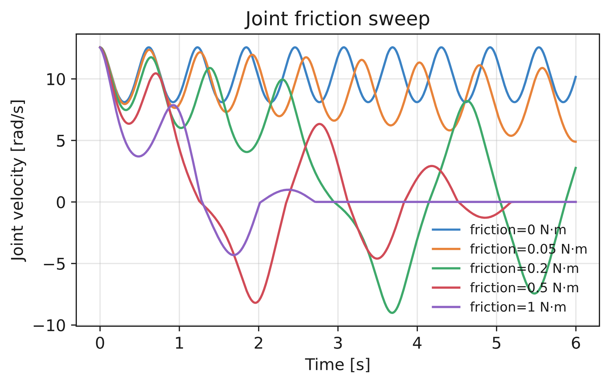

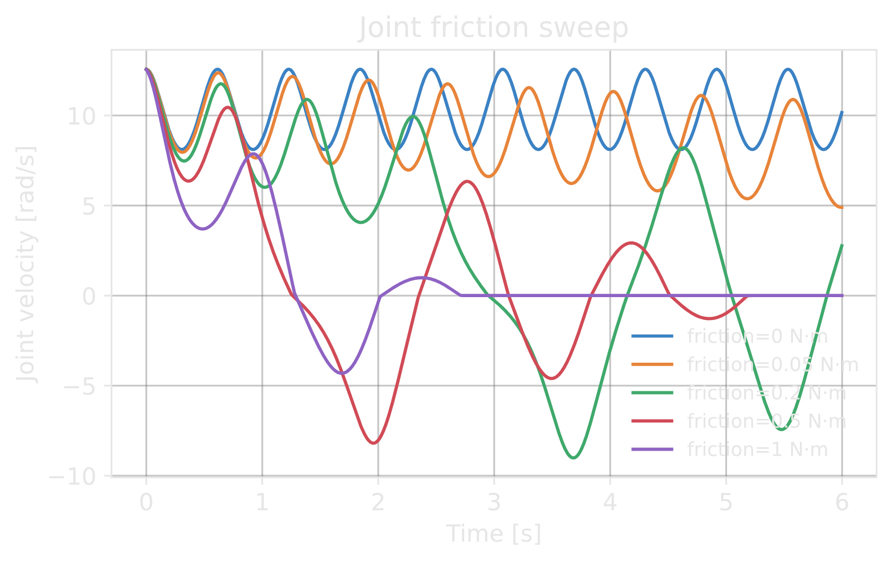
驱动力上限#
驱动力上限是电机能产生的最大力矩或力 [N·m 或 N]。下方片段使用 IdealPDActuator ，将摆从下垂位置摆起到水平位置，克服约 2.94 N·m 的重力保持力矩。模型的 actuator_effort_limit 依次取 \([1, 2, 3, 4, 6]\) N·m。
该上限影响瞬态响应，而重力决定稳态。上限高于约 2.94 N·m 的保持力矩时，摆能达到水平目标；上限较低时，关节停在目标下方，重力力矩（ \(\approx 2.94 \sin\theta\) ）与上限平衡。PD 需求超过上限时，施加的力矩和阻尼项都会被限幅，因此关节可能持续振荡，直到需求回到上限内。如果驱动力上限低于负载的静态需求，控制器就无法有效抑制关节振荡。


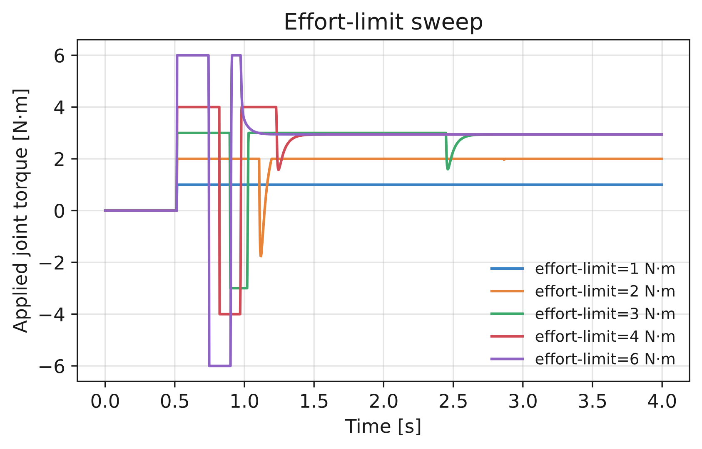

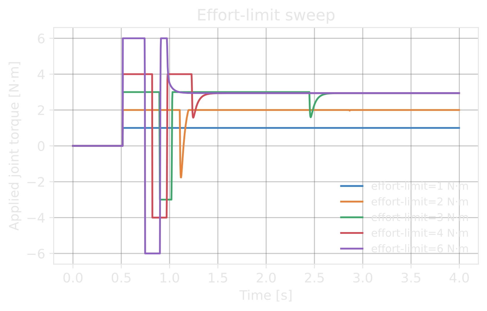
速度上限#
对于 DCMotor ， actuator_velocity_limit 是空载速度 [rad/s 或 m/s]。关节接近该速度时力矩减小，形成四象限力矩-速度包络。较低上限会缩小可用速度范围，使限幅更早发生。对于隐式组，该值通过软速度限制视图提供。 joint_velocity_limit 则请求求解器约束，其实施方式取决于后端；参见 验证执行器和限制 。

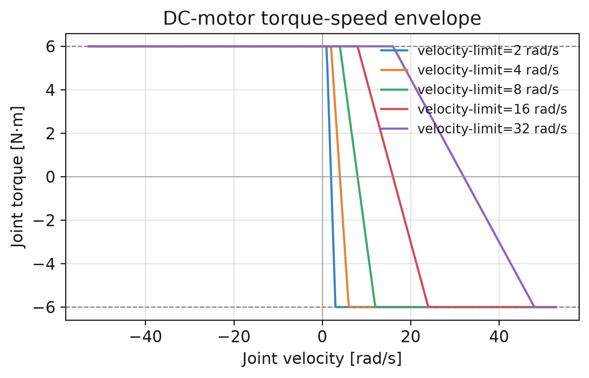

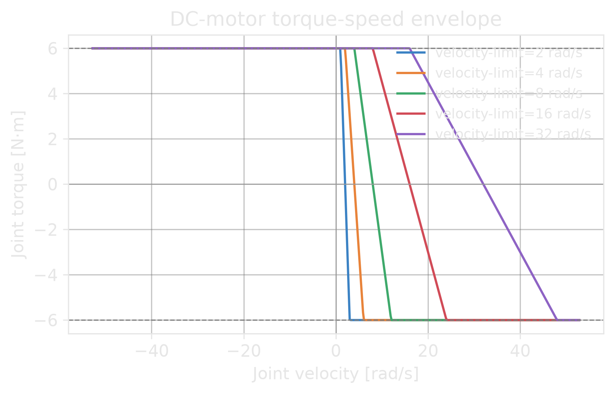
指令延迟#
DelayedPDActuator 将每条指令延迟固定数量的物理步，该数量在重置时从 [min_delay, max_delay] 采样。片段对比方波位置指令下 \([0, 6, 12, 24, 48]\) 步的延迟（在 \(dt = 1/360\text{ s}\) 时对应 0–133 ms）。延迟越长，摆越滞后于参考信号。在两次重置之间随机改变延迟，可以在仿真到现实训练中模拟传输延迟。

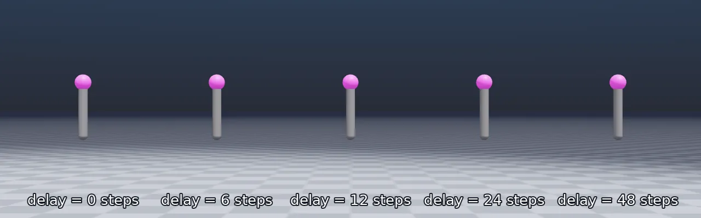

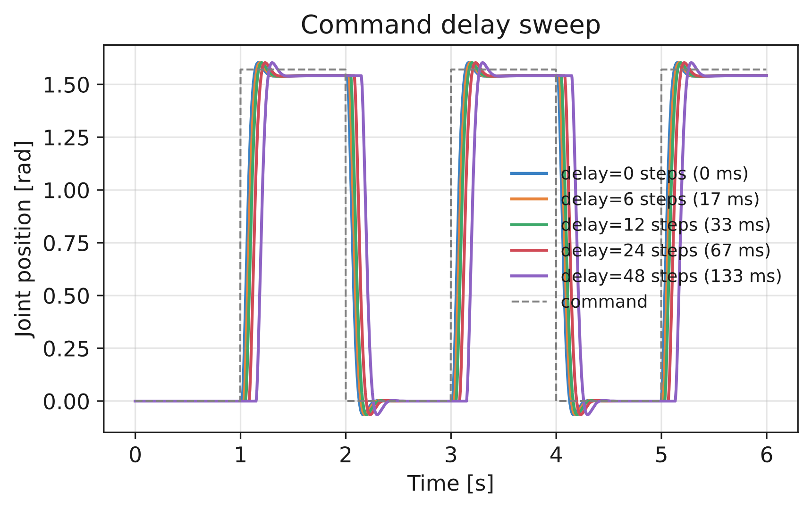

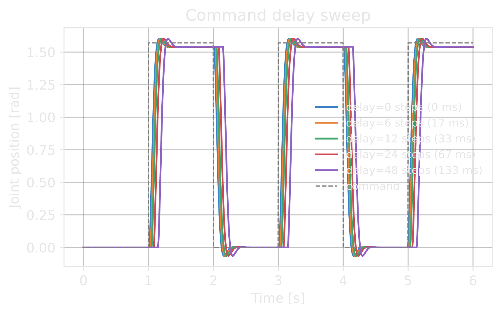
隐式与显式的对比#
在这个时间步长为 \(dt = 1/360\text{ s}\) 的单关节演示中，采用相同增益的隐式执行器和理想 PD 显式执行器产生几乎相同的响应。在其他情况下，两者的响应和稳定性可能不同。求解器负责应用隐式驱动，而显式模型每一步计算一次 PD。因此，使用隐式执行器训练的策略可能需要调整后才能用于显式执行器。对于显式关节， data.joint_stiffness 和 data.joint_damping 为零，因为增益属于执行器模型。

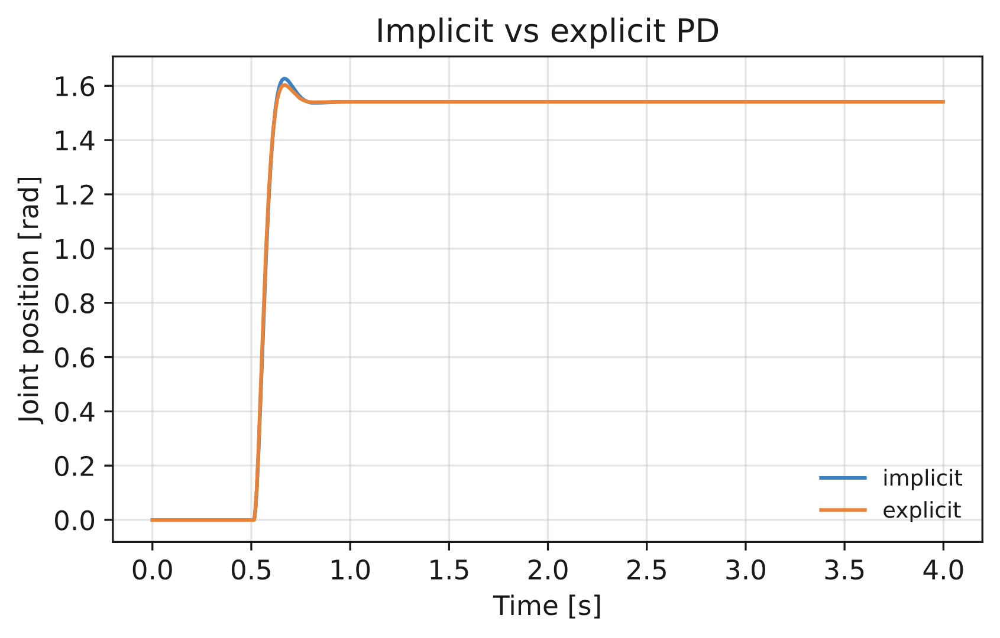

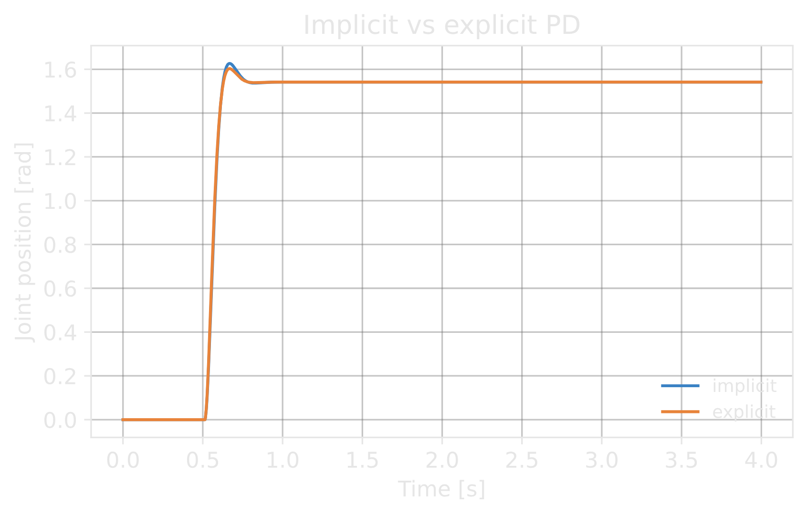
运行时 API： articulation.actuators#
访问执行器组#
actuators 是 ActuatorCollection ，以只读 Mapping 将组名映射到负责该组的对象。Isaac Lab 执行的组映射到其 ActuatorBase 模型实例。Newton 执行的组映射到驱动其关节的 Newton Actuator 对象 — 这类组没有 Isaac Lab 模型，因此应在所属对象上读取和修改控制器参数（见 原生执行器 ）。组成员在构造后固定，允许查找和遍历，但不能添加、替换或删除：
legs = robot.actuators["legs"] # the group's owner: an ActuatorBase, or a
# Newton Actuator under use_newton_actuators=True
for name, actuator in robot.actuators.items():
print(name, type(actuator).__name__)
创建关节体前配置拓扑：
robot_cfg.actuators["gripper"] = ImplicitActuatorCfg(...)
robot = Articulation(robot_cfg)
运行时， robot.actuators["gripper"] = ... 和 del robot.actuators["gripper"] 都会抛出 TypeError 。组成员和关节覆盖范围在创建关节体时就已固定。
逻辑组与执行批次#
配置或访问时， hips 和 knees 等命名组仍相互独立。单个内部执行器通过一次融合内核调用计算所有普通隐式组，不改变 robot.actuators["hips"] 返回的张量。每个关节只能属于一个组，选择范围重叠会抛出 ValueError 。在 Isaac Lab 路径上，显式、有状态、神经网络及派生类组逐组执行；Newton 执行的组则在求解器或主机端适配器中运行。融合执行属于内部优化。
指令、监测数据与生命周期#
设置执行器指令。 可修改的 target_command 视图包含期望位置、速度和驱动力。已有环境或关节索引列表及张量时，使用索引设置方法；已有布尔 Warp 掩码时，使用掩码设置方法。所有设置方法只接受关键字参数：
import torch
ids = torch.tensor([0, 1], device=robot.device) # first two joints
env_ids = torch.arange(robot.num_instances, device=robot.device)
sub = torch.zeros((env_ids.numel(), ids.numel()), device=robot.device)
robot.actuators.target_command.set_position_index(value=sub, joint_ids=ids, env_ids=env_ids)
env_ids 和 joint_ids 不能包含重复项。重复索引会并发写入同一目标，结果未定义。请去除重复项，或使用布尔掩码，使各目标最多被选中一次。
默认情况下， value 的形状为 (len(env_ids), len(joint_ids)) 。如果 value 已具有 (num_instances, num_joints) 形状，请传入 full_data=True ，设置方法会直接从完整缓冲区读取所选值。
读取指令和监测数据。 target_command 包含暂存的期望值，等待执行器处理。对于 Isaac Lab 管理的模型， output_command 包含处理后的关节指令。原生路径绕过该视图，因此它不会显示已提交的指令。Newton 在求解器中处理指令，PhysX 和 OVPhysX 则在 write_data_to_sim() 期间通过共享主机端适配器处理。通过 .torch 或 .warp 访问数组：
desired_position = robot.actuators.target_command.position.torch
processed_effort = robot.actuators.output_command.effort.torch # Isaac Lab-managed path
applied = robot.actuators.applied_effort.torch # after clipping [N·m or N]
computed = robot.actuators.computed_effort.torch # before clipping [N·m or N]
computed_effort 是限幅前的模型输出， applied_effort 是限幅后的值。对于隐式执行器，它们是为奖励计算和监测记录的近似驱动力。
随机化增益。 增益更新方式取决于执行器实现。由管理器组织的环境应使用 randomize_actuator_gains 事件，它会按需更新执行器自身的增益、隐式求解器驱动或原生控制器参数。集合层没有通用的刚度或阻尼写入方法。
生命周期。 请勿直接调用 compute() 或 submit_commands() 。关节体在环境重置时重置执行器，并通过 write_data_to_sim() 完成执行器计算、暂存和提交。应在推进仿真前调用该方法，或由场景/环境循环调用。驱动力监测数据反映最近一次调用的结果。Newton 原生处理会在求解器内继续进行；主机端适配器处理则在此调用期间完成。
从已弃用的设置方法迁移
以前在关节体上设置关节指令。这些方法现在将调用转发给集合，并发出 DeprecationWarning ：
# Before (deprecated)
robot.set_joint_position_target(target, joint_ids=ids)
# After
robot.actuators.target_command.set_position_index(value=target, joint_ids=ids)
在导出器支持集合设置方法之前，LEAPP 导出的动作项必须继续使用带注解的关节体 *_index 或 *_mask 设置方法。其他运行时代码应迁移到集合 API。
数据访问器也已迁移： articulation.data.joint_pos_target 改为 robot.actuators.target_command.position ， data.computed_torque / data.applied_torque 改为 robot.actuators.computed_effort / robot.actuators.applied_effort 。完整对应表见 Isaac Lab 3.0 迁移指南 。
数值解析：USD 与 ActuatorCfg#
增益和限制可以来自 USD 关节驱动 prim，也可以来自执行器配置。配置字段为 None 时，Isaac Lab 使用 USD 值；配置中设置了值时，会覆盖 USD 值。机器人模式只提供关节和刚体的排序，不提供执行器参数。
将 actuator_value_resolution_debug_print 设为 True ，当来源值不同或配置未指定值时，会记录每个关节的 USD 值、配置值及实际应用值。未指定值显示为 Not Specified 。示例和限制表见 机器人与关节体配置 。
原生执行器#
默认情况下，Isaac Lab 对受支持的显式执行器模型使用原生路径，各模型在求解器内或通过共享主机端适配器运行。要恢复已弃用的 Isaac Lab 执行路径，将 use_newton_actuators 设为 False ：
from isaaclab.sim import SimulationCfg
sim_cfg = SimulationCfg(use_newton_actuators=False)
启用默认原生路径后，各受支持的显式执行器配置会生成 NewtonActuator USD prim。Newton 在求解器中执行它；PhysX 和 OVPhysX 则在 write_data_to_sim() 期间通过共享主机端适配器执行同一模型。
在 Newton 上，原生执行器运行于 CUDA 图捕获区域内。隐式执行器保持不变，仍由求解器应用 PD 增益。在 CUDA 上，主机端适配器会尽可能捕获执行器指令暂存、模型执行和监测数据发布，否则使用即时执行。有状态的原生执行器不能在调用方管理的 CUDA 图中运行，因此由主机端适配器管理。
Newton 在其控制器中执行原生执行器，集合直接暴露这一归属关系： robot.actuators[name] 返回驱动该组关节的 Newton Actuator 对象，而非 Isaac Lab 模型。Newton 将结构相同的关节合并到一个执行器中，因此多个组可以共享一个对象（如果一组跨越多个对象，则以元组返回）。直接访问组件时，按 Newton 的布局读写控制器存储；要按公共关节顺序访问指定组，请使用 read_group_parameter() 和 write_group_parameter() ：
# raw ownership: the Newton actuator object itself
legs = robot.actuators["legs"]
print(type(legs.controller).__name__)
# group-scoped, user-ordered parameter access
from isaaclab.actuators.newton import read_group_parameter, write_group_parameter
kp = read_group_parameter(robot.actuators, "legs", "controller", "kp")
write_group_parameter(robot.actuators, "legs", "controller", "kp", values=kp * 2.0)
Isaac Lab 保留命名组，用于配置、关节管理，以及指令和监测数据暂存。
受支持的模型。 各受支持配置映射到以下 USD 模式：
配置 |
USD 模式 |
|---|---|
|
|
|
|
理想 PD + |
|
延迟 PD + |
|
|
已有的 USD 执行器。 对显式 Lab 执行器配置覆盖的关节，配置会替换已有的 NewtonActuator prim。未被 Lab 配置覆盖的关节保留其 USD 中编写的执行器。因此，USD 中编写的执行器和 Lab 配置的执行器可以在不同关节上共存。
警告
默认设置 use_newton_actuators=True 时，所有显式执行器配置都必须受支持。不受支持的配置会在编写原生执行器前报错。可以禁用 use_newton_actuators 使用 Isaac Lab 执行路径，或选择受支持的配置。
备注
原生执行时延迟固定。模式只存储 max_delay ，因此 min_delay 被忽略。 DelayedPDActuator 不会像在 Isaac Lab 路径中那样，在重置时随机改变延迟。
提交给后端#
提交方式因后端而异，但集合接口相同：
后端 |
提交行为 |
|---|---|
PhysX |
Isaac Lab 管理的路径通过 PhysX Tensor API 推送处理后的位置、速度和驱动力暂存缓冲区。共享主机端适配器在 |
OVPhysX |
原生路径在 |
Newton / MJWarp |
Newton 将目标写入与求解器绑定的控制数组。驱动力为前馈量，原生执行器还会使用 |
对于显式执行器，所有后端中的求解器刚度和阻尼均为零，因为增益由执行器模型维护。
本页 不涉及 以下内容：
运动生成器或底层控制模式 — 参见 运动生成器 。
跨后端策略迁移和求解器动力学差异 — 参见 在 PhysX 和 Newton 之间迁移策略 。
参见
机器人与关节体配置 — 编写配置，以及增益/限制数值解析的完整说明。
各物理后端的关节驱动 — 确保导入资产上存在关节驱动，使执行器能够绑定。
技巧和故障排除 中的“关节在 PhysX 中能够驱动，但在基于 Newton 的后端中不能驱动” — USD 驱动与后端执行器的常见问题。
isaaclab.actuators— 完整的执行器模型和配置 API 参考。